Methodology
Prerequisite: Before diving into MambaVision, it is highly recommended to understand the fundamentals of State Space Models and the original Mamba architecture. Check out my notes on State Space Models & Mamba for a comprehensive foundation.
Limitations of Predecessors
- Convolutional Neural Networks (CNN):
- Inherent limitations regarding the receptive field.
- Poor capability in capturing long-range dependencies.
- Vision Transformer (ViT):
- Powerful global context capturing thanks to Self-Attention.
- Fatal flaw: Quadratic computational complexity \(\mathcal{O}(N^2)\), making it extremely resource-intensive at high resolutions.
- The Mamba Solution:
- Linear processing power \(\mathcal{O}(N)\).
- Performance equivalent to Transformers but with speeds comparable to CNNs.
Mamba-based in Vision – The 1D Problem
- The original SSM structure only allows for sequential 1D scanning (1D Scan).
- When processing images in a single direction (e.g., left \(\rightarrow\) right or top \(\rightarrow\)
bottom):
- Blind spots: Neighboring pixels in the vertical spatial dimension are not fully connected.
- Biased Receptive Field: Pixels scanned later cannot see those that haven't been scanned (the "future"), breaking the continuity of the content.
VMamba Solution: 2D-Selective-Scan (SS2D)
Instead of using 2D convolutions (like CNNs) or global Attention (like ViTs), VMamba retains the linear complexity of SSMs but alters how data is read.
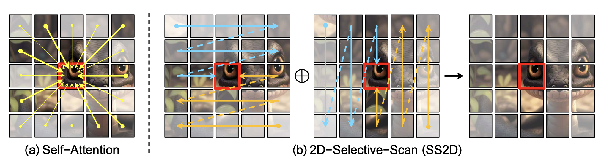
SS2D of VMamba compared to Self-Attention
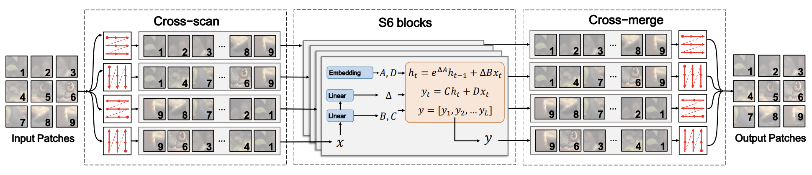
- Cross-Scan (4 directions): The image is continuously scanned diagonally from four corners to create a closed 2D spatial loop.
- Independent S6 Processing: The 4 sequences are processed discretely through the Selective Scan block.
- Cross-Merge: The sequences are merged back together (\(\oplus\)) and reshaped into a feature map with a multi-region receptive field, while maintaining \(\mathcal{O}(N)\) speed.
EfficientVMamba Solution: ES2D
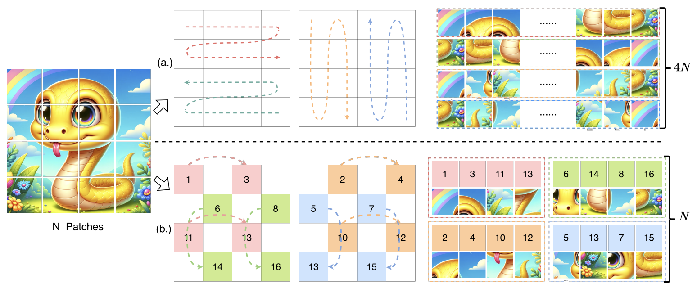
The ES2D mechanism (bottom) compared to VMamba's SS2D (top)
EfficientVMamba also hybridizes SSM and Convolutions. It adds a parallel convolutional branch to the state space block. This combination allows the model to extract highly localized features via Convolution AND capture long-range dependencies via SSM.
Current Issues with Mamba-based Models
- Data Structure Conflict: Mamba's autoregressive mechanism, originally designed for 1D sequential data, is inefficient when handling the 2D spatial data of images.
- Still Missing Full Global Context: The step-by-step processing makes it difficult for the model to grasp an overarching view and the relationships between distant regions in a single forward pass.
- Performance Trade-offs (Vim/VMamba): Workarounds like bidirectional scanning or cross-scanning significantly increase latency and computational overhead.
Overall MambaVision Architecture (Macro Architecture)
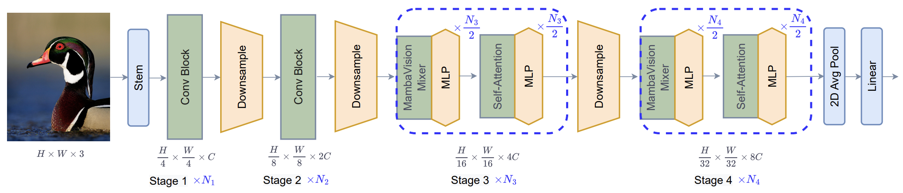
- Stem (Processing): Uses 2 Convolutional Layers to scale down resolution (\(H/4, W/4\)).
- Stages 1 & 2 (Feature Extraction): Applies standard Residual CNNs for ultra-fast feature extraction.
- Stages 3 & 4 (Context Modeling): advances the computation of global dependencies using a hybrid mixture of MambaVision Mixers and standard Transformers.
MambaVision Mixer (Micro Architecture)
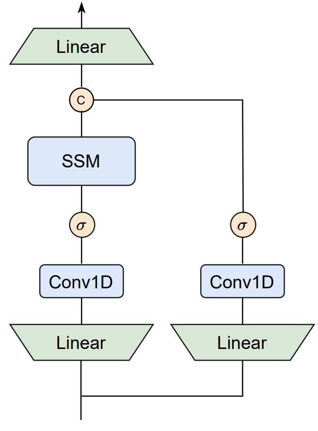
The block is redesigned to adapt to non-causal image sequences:
- Standard 1D Conv: Replaces Causal Convolutions to capture symmetric context from both directions.
- Symmetric Branch: Adds a parallel path (Conv + SiLU) to compensate for the information lost in the sequential SSM branch.
- Merge: The two branches are concatenated and passed through a linear projection layer.
Comparison with the Original Mamba:
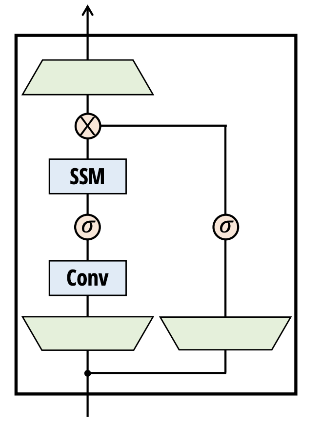
Original Mamba Block
MambaVision Mixer
The authors also conducted experiments to discover the most optimal Block design:
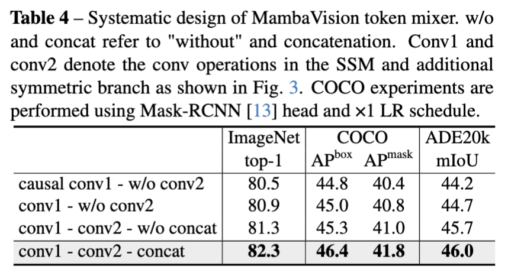
Integration of Self-Attention and MLP Blocks
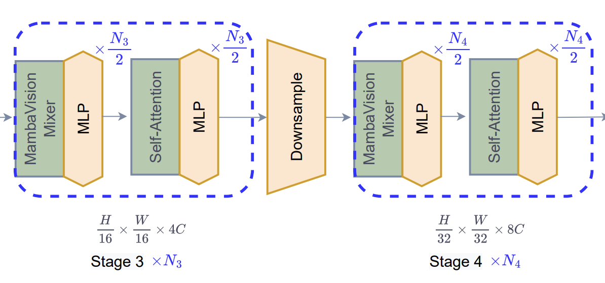
- Multi-Head Self-Attention: Introduced specifically in Stages 3 & 4 to comprehensively capture global details that Mamba may miss, significantly enhancing the IoU for Instance Segmentation.
- MLP Block integration: Handles channel mixing and provides non-linearity after each Mixer/Attention block.
Representation Capability of MambaVision
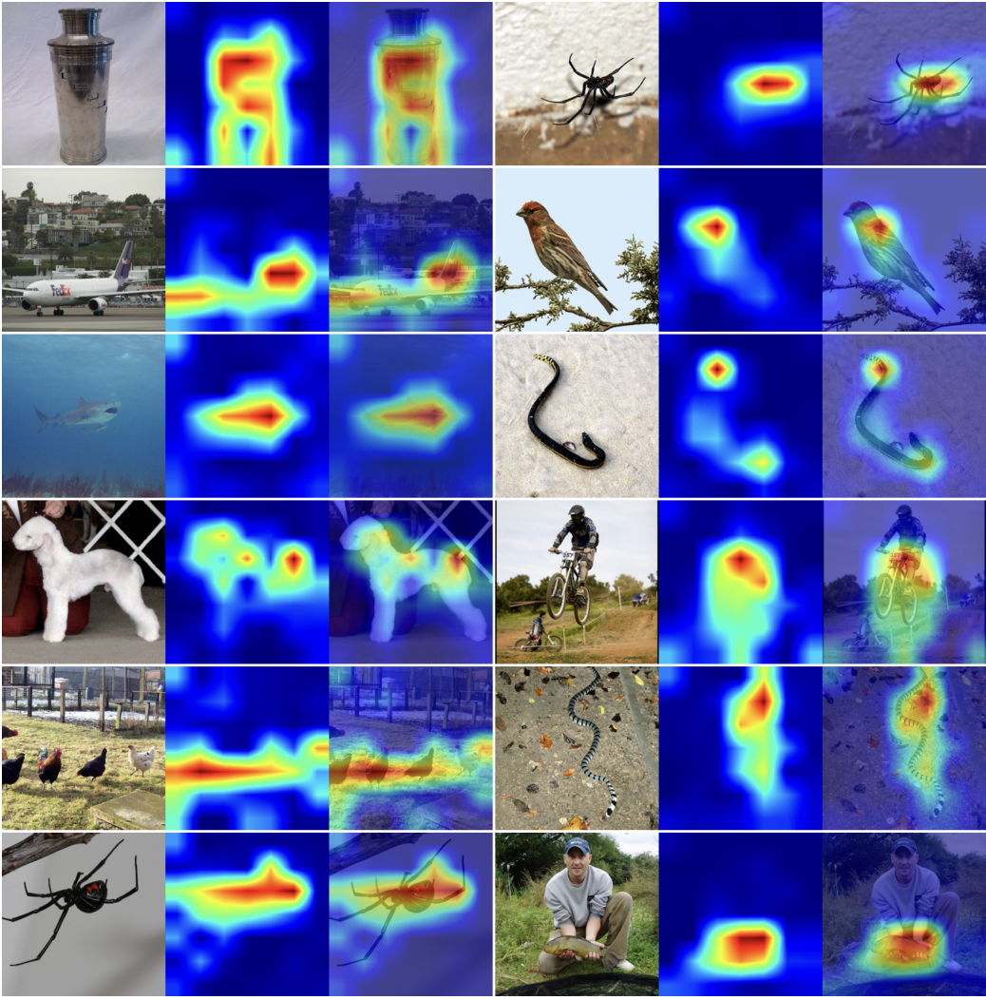
- Robust semantic recognition: leads to highly accurate object boundary detection.
- The Heatmap activations perfectly hug the shape and contour of the object without getting distracted by background noise.
Technical Evaluation and Scope
Technical Advantages: Speed & Accuracy
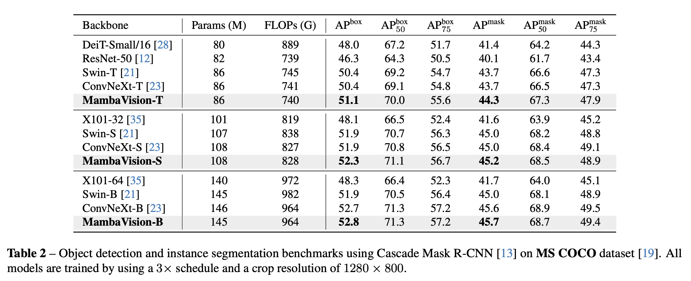
- The hybrid architecture allows MambaVision to achieve superior accuracy (Box AP, Mask AP, mIoU), completely outperforming heavyweight architectures like ConvNeXt, Swin Transformer, and VMamba.
- Higher Throughput: Achieved by pushing the heavy complex computations to the later stages and reducing the spatial dimensions early on using CNNs.
Technical Advantages: Global Context & Multi-scale Hierarchy
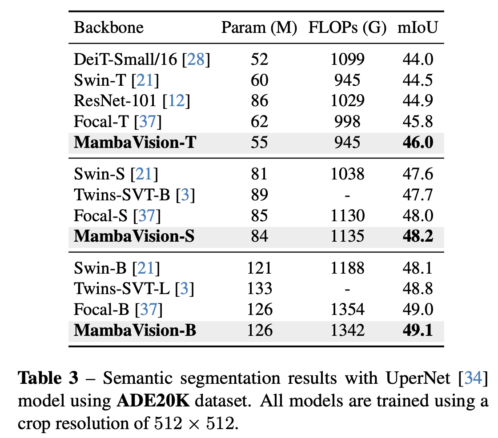
- Global Context Mastery: Placing Transformers (Self-Attention) in Stages 3 and 4 completes the "big picture" that isolated SSMs struggle to see \(\rightarrow\) highly optimized for Segmentation tasks.
- Flexible Hierarchical Architecture: The network exposes feature maps at scales from \(1/4 \rightarrow 1/32\), making it incredibly practical to serve as a backbones for models like UPerNet or Mask R-CNN.
Limitations and Challenges
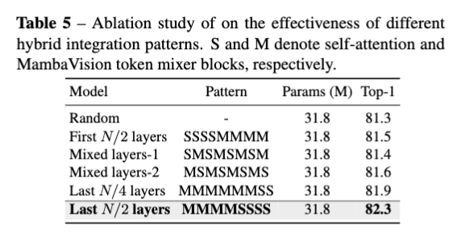
- Clunky Deployment: As a hybrid algorithm (Conv + S6 + Self-Attention + MLP), the implementation codebase is convoluted, making it difficult to deploy uniformly on basic TPU hardware.
- Tied to NVIDIA GPUs: The core SSM relies heavily on the highly optimized `mamba_ssm` CUDA package, rendering it unsuitable for Mobile or Edge environments at present.
- Rigorous Hyperparameter Tuning: The mixing ratio between Mamba and Transformer components must be meticulously tuned to yield the best results (as evidenced in the table above).
Scope of Technical Application
- Standard Tasks:
- Image Classification (ImageNet benchmark).
- Object Detection (COCO benchmark).
- Instance / Semantic Segmentation on ADE20K.
- Future Frontiers for MambaVision:
- Gigapixel Medical Pathology: Capable of handling massive Whole Slide Images (WSI) where ViTs fail due to \(\mathcal{O}(N^2)\) memory constraints.
- Deep Video Understanding: Effortlessly mapping the Time dimension—a native strength of RNNs/SSMs.
- Remote Sensing: Accurately identifying vast, contiguous geographic structures or infrastructure.
References
- MambaVision: A Hybrid Mamba-Transformer Vision Backbone (Ali Hatamizadeh, Jan Kautz, 2024).
- VMamba: Visual State Space Model (Yue Liu et al., 2024).
- EfficientVMamba: Atrous Visual State Space Model for Efficient Visual Recognition (Xiaohuan Pei et al., 2024).
- Mamba: Linear-Time Sequence Modeling with Selective State Spaces (Albert Gu, Tri Dao, 2023).
- State Space Models & Mamba (tawannt, 2026).